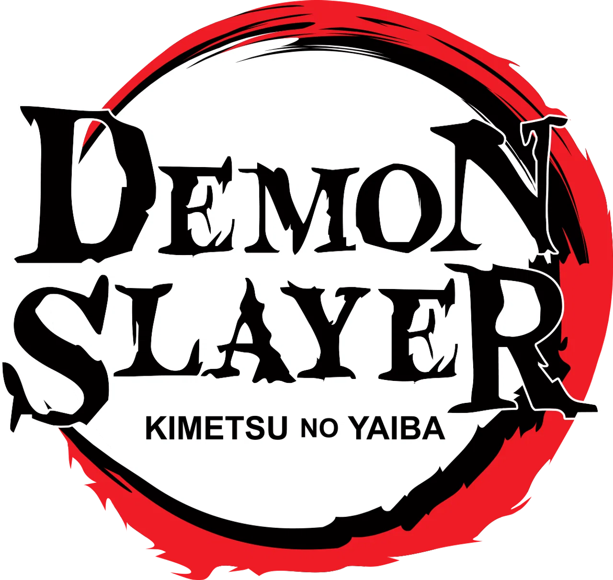
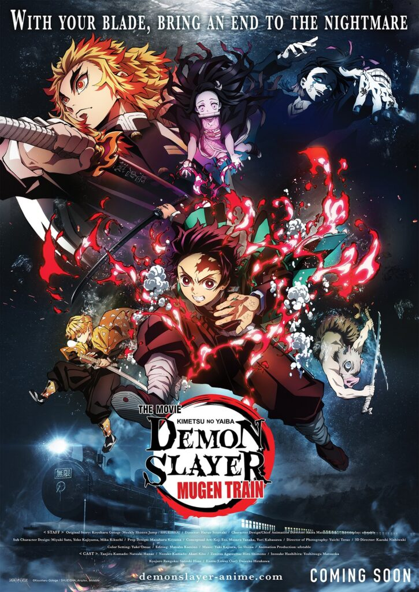
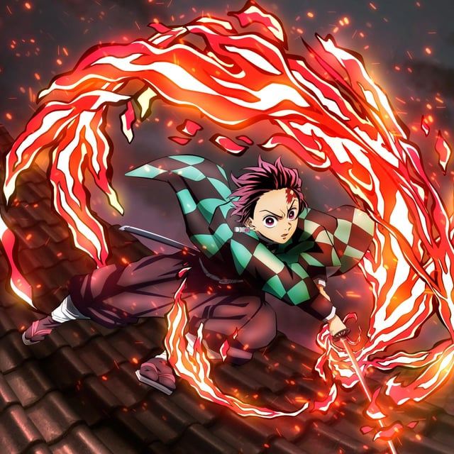
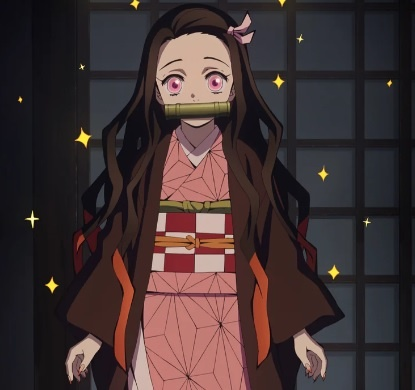
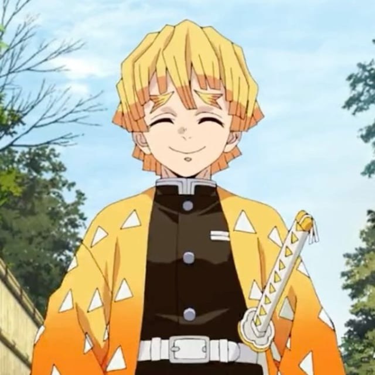
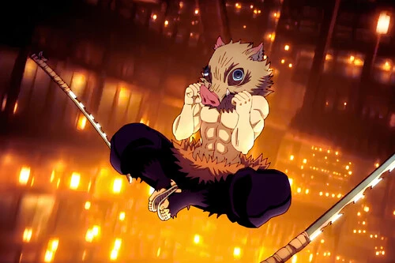
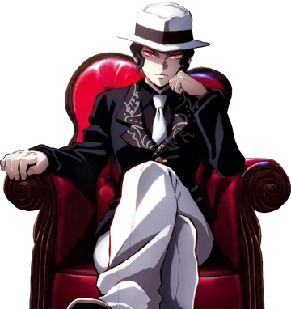
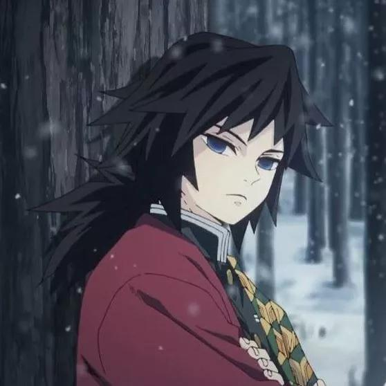
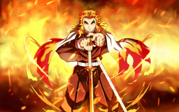
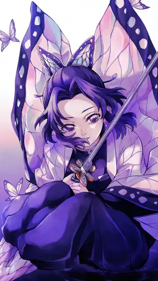

<!DOCTYPE html>
<html lang="en">
<head>
    <meta charset="UTF-8">
    <meta name="viewport" content="width=device-width, initial-scale=1.0">
    <title>Pagina de Anime</title>
    <link rel="stylesheet" href="../css/estilo.css">
</head>
<body>
</html>
    <div class="padre">
        <header>
            <table>
                <tr>
                    <td><div class="logo"> </div></td>
                    <td><div class="titulo">Demon Slayer</div></td>
                </tr>
            </table>
        </header>
        <nav>
            <table>
                <tr>
                    <td><div class="caja"><a href="../index.html">Inicio</a></div></td>
                    <td><div class="caja"><a href="#">Demon Slayer</a></div></td>
                    <td><div class="caja"><a href="../pag/Frieren.html">Frieren</a></div></td>
                    <td><div class="caja"><a href="../pag/Solo_Leveling.html">Solo Leveling</a></div></td>
                    <td><div class="caja"><a href="../pag/Tobe_HeroX.html">Tobe Hero X</a></div></td>
                    <td><div class="caja"><a href="../pag/Your_Name.html">Your Name</a></div></td>
                    <td><div class="caja"><a href="../pag/Contacto.html">Contacto</a></div></td>
                </tr>
            </table>
        </nav>
        <section>
            <h1 class="sub">Demon Slayer</h1>
            
            <h3 class="tex">De que trata la serie de Demon Slayer</h3>
            <p class="texto">La historia se desarrolla en el Japón de la Era Taisho. El protagonista es Tanjiro Kamado, un joven de corazón noble que vive en las montañas vendiendo carbón para mantener a su familia.</p>
            <p class="texto">Su vida cambia drásticamente un día que regresa a casa y descubre que un demonio asesinó a casi toda su familia. La única sobreviviente es su hermana menor, Nezuko, pero con un detalle aterrador: ha sido transformada en demonio.
            A diferencia de otros demonios, Nezuko aún muestra señales de emociones humanas y protege a su hermano. Motivado por el deseo de curar a Nezuko y cobrar venganza contra el ser que destruyó su vida, Tanjiro se une a la Compañía de Cazadores de Demonios (Demon Slayer Corps). La trama sigue su entrenamiento, sus batallas contra seres sobrenaturales y su búsqueda del origen de todos los males: Muzan Kibutsuji.</p>
            <h2 class="tex">Personajes Principales</h2>
            <h4 class="tex">Tanjiro Kamado</h4>
            
            <p class="texto">Es el pilar emocional de la serie. Su mayor atributo no es su fuerza, sino 
                su empatía infinita. Es capaz de sentir lástima incluso por los demonios más crueles al morir, reconociendo que alguna vez fueron humanos.</p>
            <p class="texto"> Posee un olfato sobrehumano que le permite detectar las emociones de los demás, rastrear enemigos a kilómetros y encontrar la "línea de intervalo" (el punto débil) en un combate.</p>
            <h4 class="tex">Nezuko Kamado</h4>
            
            <p class="texto">Nezuko es la hermana menor de Tanjiro, transformada en demonio pero aún con vestigios de humanidad. A pesar de su naturaleza demoníaca, protege a su hermano y a los humanos, mostrando una fuerza increíble y habilidades regenerativas.</p>
            <p class="texto">La personificación de la fuerza de voluntad. Al ser convertida en demonio, rompe toda lógica biológica al negarse a comer carne humana. Usa el sueño como fuente de energía en lugar de la sangre.
                Su Técnica de Sangre Demoniaca (Explosión de Sangre) le permite generar llamas rosadas que solo queman a los demonios y curan el veneno en los humanos. También puede alterar su tamaño para esconderse en la caja de madera de Tanjiro o crecer para luchar.</p>
                <p class="texto">Es el motor de la historia. Su existencia desafía las reglas de la Compañía de Cazadores, obligándolos a cuestionar si todos los demonios son realmente malvados.</p>
            <h4 class="tex">Zenitsu Agatsuma</h4>
            
            <p class="texto">Representa el miedo humano ante lo desconocido. Aunque parece un alivio cómico por su cobardía y su obsesión con el matrimonio, sufre de una baja autoestima profunda que oculta un talento prodigioso.
                Tiene un oído ultrasónico. Solo puede pelear cuando entra en un estado de sueño profundo o inconsciencia, donde sus instintos toman el control. Domina únicamente la Primera Postura de la Respiración del Rayo, pero la ha perfeccionado a niveles divinos.
                Su arco trata sobre la superación personal: aprender que no necesitas saber mil técnicas, sino ser maestro de una sola hasta alcanzar la perfección.</p>
            <h4 class="tex">Inosuke Hashibira</h4>
            
            <p class="texto">Criado por jabalíes en la montaña, carece de modales humanos pero posee un instinto de supervivencia salvaje. Es extremadamente competitivo y siempre busca pelear con los más fuertes para reafirmar su valor.
                Creó su propio estilo, la Respiración de la Bestia. Su cuerpo es increíblemente flexible (puede dislocar sus articulaciones a voluntad) y posee una percepción sensorial que detecta vibraciones en el aire a través de su piel.
                Aporta la fuerza bruta y la impredecibilidad al equipo. Su desarrollo se centra en aprender a trabajar en equipo y entender los sentimientos de amistad, algo que le era totalmente ajeno.</p>
            <h3 class="tex">Antagonista</h3>
            <h4 class="tex">Muzan Kibutsuji</h4>
            
            <p class="texto">El primer demonio de la historia, con más de 1,000 años de edad. Es un narcisista patológico que ve a los humanos (y a otros demonios) como seres inferiores. Su único miedo es la muerte y la luz solar.
                Puede cambiar de forma (apareciendo como hombre, mujer o niño), posee múltiples corazones y cerebros, y su sangre es un virus que transforma o mata a quien la recibe.</p>
            <h3 class="tex">Personajes de Impacto para Tanjiro</h3>
            <h4 class="tex">Giyu Tomioka</h4>
            
            <p class="texto">Un hombre de pocas palabras que carga con una culpa inmensa (el "síndrome del superviviente"). Fue el primer cazador en confiar en que Nezuko no devoraría a Tanjiro.
                Actúa como el mentor silencioso y el protector legal de los hermanos Kamado ante los demás Pilares.</p>
            <h3 class="tex">Kyōjuro Rengoku</h3>
            
            <p class="texto">Un guerrero con una moral inquebrantable y un optimismo contagioso. Su filosofía es simple: "Los fuertes tienen el deber de proteger a los débiles".
                Aunque su tiempo en la serie es corto, su sacrificio en el Tren Infinito define el crecimiento de Tanjiro, Zenitsu e Inosuke, dejándoles la lección de "mantener el corazón ardiendo".</p>
            <h4 class="tex">Shinobu Kocho</h4>
            
            <p class="texto">Una mujer de apariencia delicada pero con una mente afilada y un corazón lleno de rencor hacia los demonios. Es la única Pilar que no puede decapitar a un demonio debido a su falta de fuerza física, por lo que desarrolló un veneno letal para compensar esta debilidad.
                Su historia personal de pérdida y venganza añade una capa de complejidad emocional a la narrativa, mostrando que incluso los héroes pueden albergar oscuridad en su interior.</p>
            </p>
        </section>
        <footer>
            <h5>Diseñado por: Nehemias Corine Abalos - UMSA,2026</h5>
        </footer>
    </div>
</body>
</html>